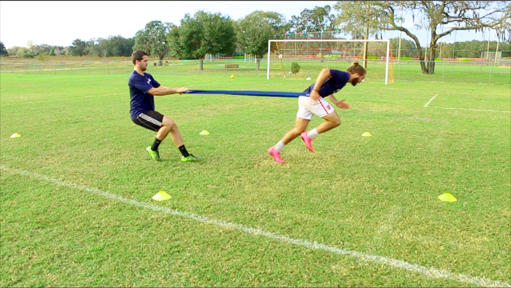
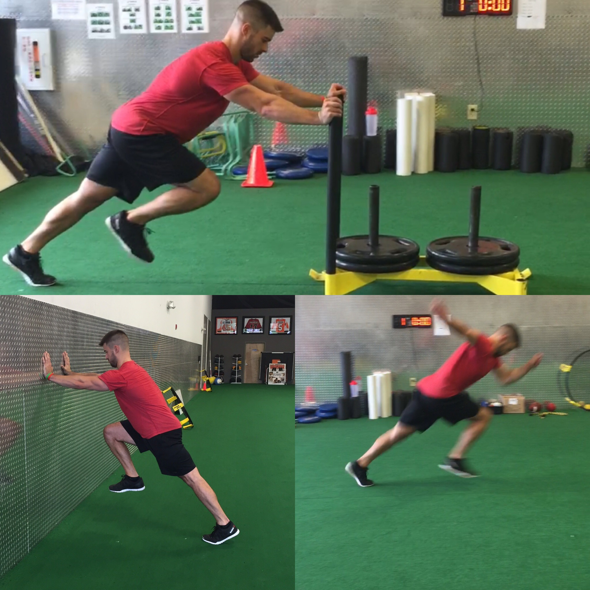
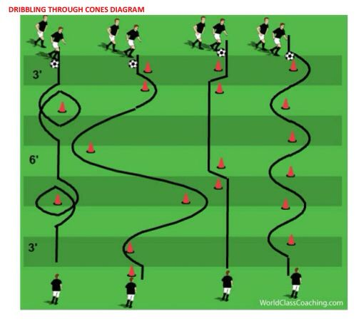
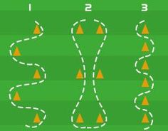
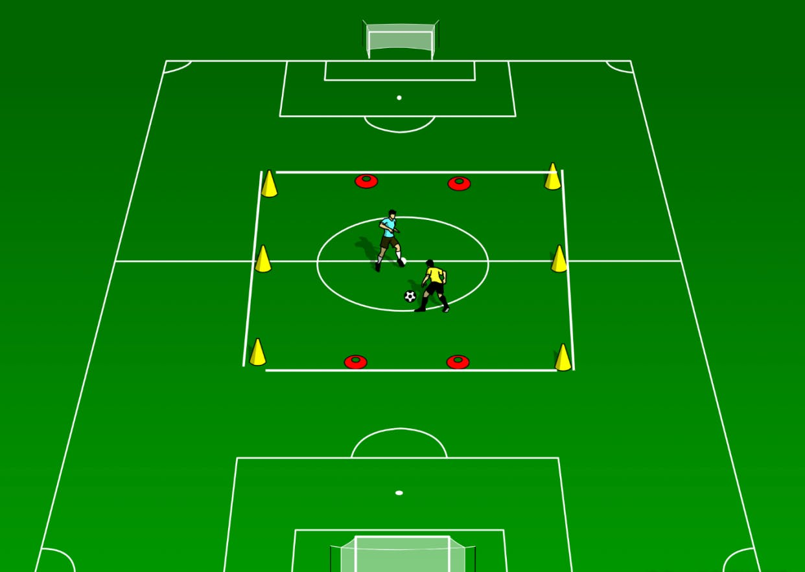
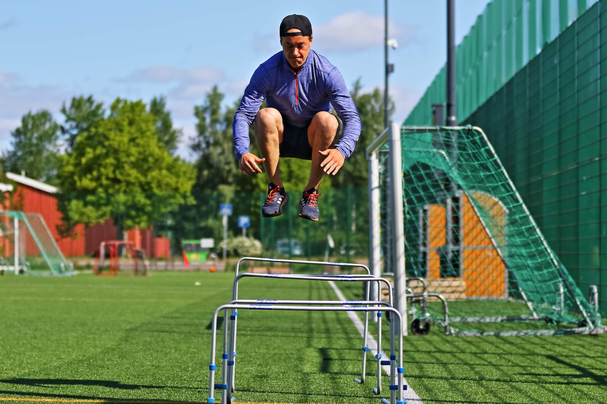

Training & Nutrition
FOOTBALL NEWS
Welcome to My Personal Soccer coaching
Check out our programmes to see which is right for you!
Being a soccer coach means more than knowing how to execute a particular soccer skill, run a soccer drill, or set up a formation. The soccer coaching advice in this section highlights the important issues facing coaches and shows you how to approach them to become a better coach. These articles look at issues such as playing against sides that cheat, coping with problem players, getting a winning mentality and much more.
COURSES
TUTORIAL
The Benefits of Speed Training
Speed and agility training can be beneficial for many athletes or for any individual who wants to increase their sports performance. Speed and agility training can also enhance a variety of sports, such as training for a bike race or a marathon. The following are a few benefits of adding Speed and Agility training into your personal training
 Speed Trainig <> 5X4 <> Rest 30sec
Effective Ways To Increase Power For Football
Circuit Training: Weight-based circuit training (sit-ups, push-ups, lunges, squat jumps, etc.) can help you
a lot in developing muscle strength, thereby improving your endurance.
Maximising your own potential to run fast for shorter bursts will stand you head and shoulders above the rest,
so try using weighted sled pulls and parachute sprints, which will help push your legs well beyond their means.
Power Trainig <> 4X3 <> Rest 1min
The Benefits Of Endurance Training
Endurance training is great for improving your overall fitness.
It helps the body to become capable of carrying out activities with reduced strain.
This is because the muscles worked are trained to use oxygen more efficiently,
resulting in an increased oxygen uptake capacity.
Endurance Trainig <> 5X4 <> Rest 30sec
Improve Your Soccer Dribbling Skills
Dribbling is something that we want every player to love doing because it helps you love the ball, which means you will play more at home. Soccer dribbling requires you to be able to get away from defenders while taking small or large toucheswith your feet Learning to do it slow and correct is important or else the player doesn’t get their form down and creates bad muscle memory and habits.
  
Dribbling Trainig <> 5X4 <> Rest 1min
Benefits of Jumping
Jumping rope has many benefits and is a useful exercise for any sport and being an athlete in general. Even if your goal isn’t to be an athlete jumping rope is overall a good exercise for whatever purpose. Today I’ll share with the benefits of jumping rope and how it might help you as a soccer player.



Soccer Passes
Soccer is a fast-paced game requiring speed, good footwork skills and accurate passing. The kind of pass you choose to execute depends on the defense and positioning of your opponents. Some passes are used to create a strong offensive drive and scoring opportunities, while defensive passes are used to slow down the game or maintain possession of the ball when under pressure. A good soccer player has the ability to kick several types of passes.